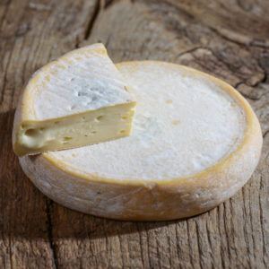

TARTIFLETTE

INGRÉDIENTS : ( 4 PERSONNES )

1 Reblochon ( 500 g )

1 kg Pommes de terre

200 g Allumettes de lardon

2 Oignons

200 ml Crème

Sel / Poivre

1 Reblochon ( 500 g )
1 kg Pommes de terre
200 g Allumettes de lardon
2 Oignons
200 ml Crème
Sel / Poivre
➤ Épluchez 1 kg de pommes de terre, puis coupez les en morceaux assez grossiers.
➤ Faites les cuire dans l’eau bouillante salée pendant 15 minutes.
➤ Faites revenir 2 oignons émincés dans une noisette de beurre salé pendant 5 bonnes minutes à feu moyen.
➤ Ajoutez les allumettes, poivrez, et laissez cuire 5 minutes.
➤ Ajoutez 200 ml de crème semi-épaisse et laissez infuser pendant 5 minutes.